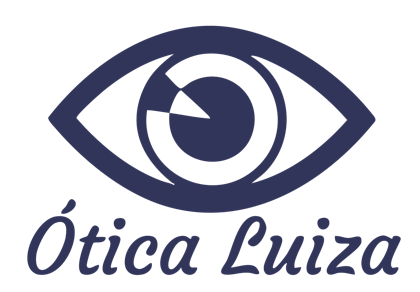
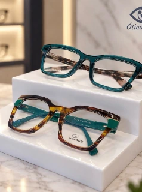
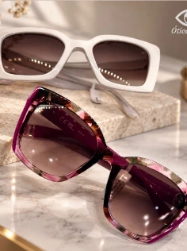
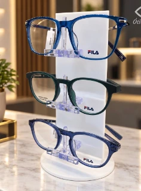
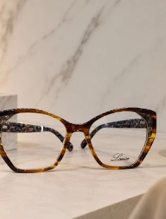

“Ótimo serviço. Atendimento maravilhoso”

Vamos conversar ↗ÓTICA LUIZA · FLORIANÓPOLIS · DESDE 1998
Seu olhar.
Sua melhor
versão.
UM NOVO JEITO DE VER A VIDA↓
Enxergar bem e se sentir você.
Encontre os óculos que acompanham
seu estilo, sua rotina e sua história.
01 / Nossa essênciaMais do que escolher óculos.
Mais do que escolher óculos.
É encontrar um olhar que
combina com você.
CUIDADO QUE ATRAVESSA GERAÇÕESDesde 1998,
Desde 1998,
de perto.
Florianópolis, Santa Catarina
Na Ótica Luiza, cada escolha começa com uma conversa. Entendemos sua rotina para ajudar você a encontrar armações e lentes que façam sentido para a sua vida.
Com atendimento próximo, marcas selecionadas e laboratório próprio, cuidamos dos detalhes que fazem diferença no seu dia a dia.
↗02 / ColeçõesPara ver.
Para ver.
Para ser visto.
Seu estilo não precisa escolher
entre beleza e conforto.

↗Óculos de grau
O essencial, com personalidade
↗Óculos de sol
Seu estilo em cada momento
↗Lentes para sua rotina
Clareza para o que importaUMA SELEÇÃO PARA O SEU OLHARRay-BanOAKLEYMICHAEL KORSFILAVERSACE

OLHAR ATENTO
a cada detalhe.
a cada detalhe.
03 / Laboratório próprioPrecisão no cuidado.
Precisão no cuidado.
Agilidade na entrega.
O cuidado com seus óculos acontece de perto. Nosso laboratório próprio traz mais agilidade ao processo e atenção à qualidade em cada etapa.
01
Seu tempo é importante
Mais agilidade na preparação dos seus óculos.
02
Qualidade em cada detalhe
Atenção à montagem, aos ajustes e ao acabamento.
03
Solicite seu orçamento ↗Você bem acompanhado
Orientação para escolher e cuidar das suas lentes.
04 / Histórias reaisPor trás de cada olhar,
Por trás de cada olhar,
uma boa história.
A confiança de quem já escolheu a Ótica Luiza.
“Agilidade e excelência”
“Foi muito bom o atendimento”
“fiquei muito satisfeita”
Trechos de avaliações públicas do Google. Nota e quantidade consultadas em 27/10/2026.
05 / Venha nos conhecerSeu próximo olhar
Seu próximo olhar
começa aqui.
Estamos no Centro de Florianópolis.
Passe para experimentar, conversar e encontrar
seu novo par favorito.
ESPERAMOS POR VOCÊBem no coração
Rua Tenente Silveira, 208
Centro · Florianópolis, SCComo chegar ↗
Bem no coração
de Floripa.
Rua Tenente Silveira, 208Centro · Florianópolis, SCComo chegar ↗
Converse com a equipe(48) 3224-9471
Acompanhe @otica.luiza ↗